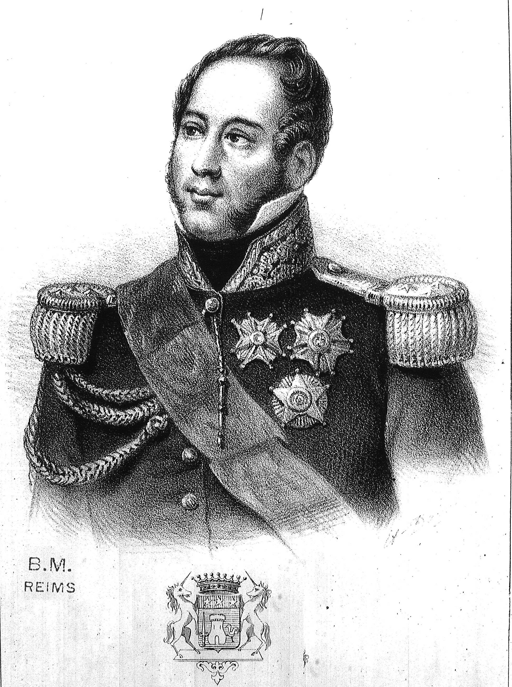
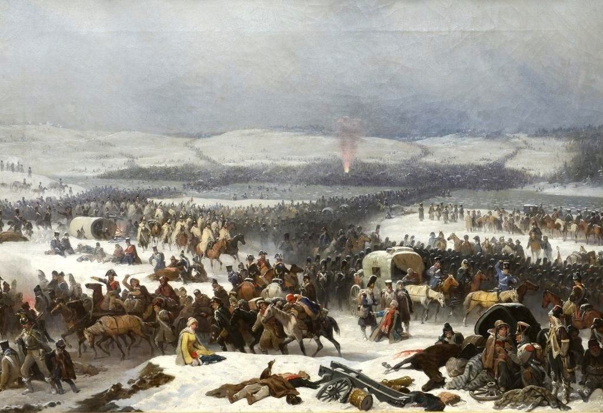
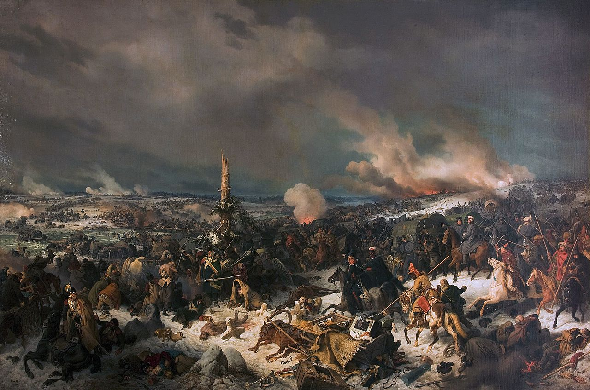

베레지나의 동쪽 - 비극과 투지
게시: 2021-10-04T06:30:12+09:00
빅토르의 제9군단은 비교적 최근에 편성되어 보로디노 전투 이후인 9월 초에야 네만 강을 건넜던 약 3만 규모의 군단으로서, 대부분 바덴(Baden), 헤센(Hessen), 작센(Sachsen) 등 독일인들로 이루어져 있었고 거기에 일부 폴란드인들이 섞여 있었습니다. 이들도 물론 척박한 러시아 땅에 들어서자마자 빠르게 녹아내리기 시작했고, 베레지나 강에 도착했을 무렵에는 이미 1만2천 정도로 줄어들어 있었습니다. 그런데 비트겐슈타인의 추격을 뿌리치고 스투지엔카 외곽으로 달려온 빅토르 휘하엔 불과 8천명의 병력 밖에 없었습니다. 나머지 4천은 어디에 있었을까요? 이들은 파르투노(Louis Partouneaux) 장군 휘하의 1개 사단이었는데 이들은 나폴레옹의 명에 따라 일종의 미끼로서 며칠 전부터 보리소프의 불타 버린 다리 근처를 지키고 있었습니다. 이들은 그 몫을 톡톡히 해냈고 덕분에 치차고프는 최후의 순간까지도 보리소프와 그 하류쪽이 진짜 프랑스군의 도강 지점이라고 생각했습니다. 그러나 그 대가는 혹독했습니다. 이들은 처음에는 사기가 드높았고 거듭되는 러시아군의 공격을 서로 웃어가며 튕겨낼 수 있었습니다. 하지만 병사들의 사기란 탄약과 같은 거라서 무궁무진한 것이 아니었습니다. 파르투노의 병사들은 이틀이 지나자 기진맥진하여 어린애처럼 우는 병사들이 생길 정도였습니다. 다행히 27일 오후가 되자 이제 역할을 다 한 파르투노 사단은 후퇴 명령을 받고 서둘러 스투지엔카의 가교를 향했습니다. 비극은 후퇴길에 벌어졌습니다. 어떻게 생각하면 당연한 일인데, 이미 스투지엔카 외곽에는 비트겐슈타인의 러시아군이 도착하여 진을 치고 있었습니다. 파르투노 사단은 크게 2대 여단으로 이루어져 있었는데, 이 중 1개 여단은 강변에 바싹 붙어 가느라 무사히 빅토르의 제9군단 본대와 합류할 수 있었지만 나머지 1개 여단은 비트겐슈타인의 러시아군 진영으로 똑바로 걸어들어갔던 것입니다. 결국 크게 전투가 벌어졌고, 이 불운한 여단은 거의 50%에 달하는 사상자를 낸 뒤 항복해야 했습니다. 다른 그랑다르메 포로들처럼 이들은 입은 옷을 모두 벌거벗겨진 뒤 러시아군에게 가혹하게 두들겨 맞고 후방으로 끌려 갔습니다. 특히 불운했던 것은 그 중 제29 연대였습니다. 이들은 대부분 약 10년 전 생도밍그, 그러니까 아이티 섬에서 영국군의 포로가 되어 10년 간 좁고 냄새나는 영국의 감옥선에 갇혀 있다가 최근에야 풀려난 병사들로 이루어져 있었습니다. 아마 폴란드인들이었나 봅니다. 이들은 영국에 이어 이번에는 러시아 감옥에서 썩어야 했습니다.

(파르투노 장군입니다. 나폴레옹보다 1살 어렸던 그는 비교적 이른 1799년에 이미 장군으로 승진했으나 그건 나폴레옹이 이집트에 가 있던 시기였고 파르투노는 1799년 북부 이탈리아 노비(Novi) 전투에서 수보로프의 러시아군에게 패배 당했을 뿐만 아니라 부상을 입고 포로까지 되었습니다. 그 때문인지 이후 그는 승진에서 큰 재미를 못 봤습니다. 그는 1812년 이 베레지나 전투에서 러시아군에게 다시 한번 포로가 되는 불운을 겪었습니다. 1824년에는 부르봉 왕가 치하에서 일종의 국회의원이 되기도 했습니다만 비교적 이른 나이인 64세로 사망했습니다.) 빅토르의 제9군단 본대를 향한 비트겐슈타인의 공격은 28일 오전 9시 경부터 시작되었습니다. 러시아군은 빅토르 군단보다 4~5배 더 많은 병력을 자랑했으나, 이들도 치차고프의 러시아군과 동일하게, 우월한 포병 전력을 십분 활용하여 빅토르 군단을 씹기 좋게 다져놓을 생각으로 전열 보병들의 전진 이전에 대포와 박격포를 이용하여 치열한 포격부터 가했습니다. 비트겐슈타인은 노련한 군인이었습니다. 그는 아무 계획 없이 포병 전력을 낭비하지 않고, 그가 궁극적으로 뚫으려 의도하던 빅토르 방어선의 좌익으로 포격을 집중했습니다. 빅토르는 직접 방어선 맨 앞을 뛰어다니며 독일인들과 폴란드인들로 구성된 병사들을 독려하여 단 한치도 물러서지 않도록 했습니다만, 머리 위로 날아가는 포탄을 막을 방법은 없었습니다. 러시아군의 공격이 시작되자, 간밤에 다리를 건너지 않고 늑장을 부리던 낙오병들과 민간인들은 부랴부랴 다리로 몰려 들었습니다. 2개의 좁은 다리로 몰려든 이들은 다리 입구의 폭이 약 1km, 깊이는 400m 정도 되는 지역을 그야말로 콩나물 시루처럼 사람과 말, 수레와 마차로 가득 채웠습니다. 그리고 이 난장판을 러시아군의 포탄이 사정없이 강타했습니다. 특히 박격포로부터 날아온 폭발탄들은 군중 한가운데 떨어져 큰 피해와 함께 그보다 더 큰 공포를 야기했습니다. 구형탄이든 폭발탄이든 포탄을 맞고 즉사하는 사람들의 운이 차라리 나았습니다. 많은 사람들과 말들이 포탄과 파편에 맞아 팔다리가 잘리고 내장이 쏟아지면서 비명을 지르고 고통에 찬 몸부림을 쳤습니다.

(베레지나 강의 다리를 그린 폴란드 군인이자 화가인 수코돌스키(January Suchodolski)의 유명한 작품입니다. 빽빽히 몰려있는 군중들 한가운데서 러시아군의 폭발탄이 폭발하는 것이 보입니다만, 당시 폭발탄의 위력은 저렇게 대단하지 않았습니다. 그냥 검은 폭발 연기와 함께 파편을 날리는 정도였습니다.) 폰 커츠(von Kurz)라는 대위는 한 4살 정도 되어 보이는 어린 딸을 데리고 말을 탄 채 다리를 건너려던 젊고 아름다운 부인이 포탄에 맞는 장면을 목격했습니다. 포탄은 부인이 타고 있던 말과 함께 부인의 다리를 으스러뜨렸습니다. 잠깐 정신을 잃었던 이 부인은 곧 깨어나 이젠 희망이 없다는 것을 깨닫자, 자신의 박살이 난 다리에서 피로 흠뻑 젖은 스타킹 밴드를 풀러 그것으로 그 어린 딸의 목을 졸라 죽인 뒤, 이제 시체가 된 딸을 품에 꼭 껴안고 조용히 누워 출혈로 죽기를 기다렸다고 합니다. 비참한 최후는 이 부인만 겪었던 것은 아니었습니다. 인정사정 없는 포탄이 빗나갈래야 빗나갈 수 없는 빽빽한 군중 속으로 내리꽂히자, 좁고 위태로운 임시 가교 앞에 무질서하게 몰려 아우성치던 군중들 중 많은 사람들이 그냥 차가운 강물 속에 뛰어들어 목까지 차오르는 얼음 같은 강물을 걸어서 건넜습니다. 물론 그 와중에 많은 사람들이 희생되었습니다. 폴란드 경기병 연대 소속 주모(cantinière)인 바스카(Baska)라는 이름의 부인도 어린 아들과 함께 마차를 타고 있었는데, 이 마차도 포탄에 맞아 박살이 났습니다. 다행히 바스카와 아들, 그리고 말은 큰 부상을 당하지 않았기에, 바스카는 서둘러 말을 마차에서 떼어낸 뒤 어린 아들을 안고 말 등에 올라 그대로 강물로 뛰어들었습니다. 다른 많은 사람들처럼, 그녀는 말을 탄 채로 강을 건너려 했던 것입니다. 그러나 기병대의 말과는 달리 키가 작았던 바스카의 말은 강을 중간 즈음 건넜을 때 차가운 강물과 바스카의 무게를 견디지 못하고 그만 물에 빠져 죽어버렸고, 바스카와 어린 아들은 강물 속에 내동댕이쳐졌습니다. 바스카는 베레지나 서쪽 강변에 간신히 닿을 수 있었지만, 그녀는 아들을 두번 다시 볼 수 없었습니다. 바스카 말고도 많은 사람들이 이런 식으로 강을 건넜습니다. 22살의 어린 대위였던 게리네(de la Guerinais)도 부대와 떨어지는 바람에 이때 군중 틈에 끼어 있었는데, 공포에 질린 사람들에게 이리저리 밀리다보니 다리 입구가 아니라 그냥 강변으로 밀려났습니다. 그는 원래 수영 솜씨에 자신이 있었으므로 망설이지 않고 물 속으로 뛰어들었습니다. 젊고 강인했던 그는 무사히 강을 건넜고, 운이 좋게도 거기서 모닥불을 피워놓은 병사들을 만나 거기서 몸을 말릴 수 있었습니다. 빅토르는 이 상황을 극복하기 위해 부대를 이끌고 러시아군 전면에 선 포병대를 향해 돌격을 감행했습니다. 그리고 빅토르 군단은 왜 쿠투조프가 얼마 남지 않은 그랑다르메의 잔존 부대와 정면 승부를 벌어는 것을 부하들의 간청에도 불구하고 고집스럽게 거부했는지를 입증하기라도 하듯 놀라운 사기와 투지를 보여주었습니다. 빅토르 휘하의 독일 병사들은 자신들의 4~5배가 넘는 러시아군을 향해 머스켓 소총만 들고 돌진하여 그 맨 앞줄에 포진한 러시아군 포병들을 사정거리 밖으로 몰아내는데 성공했습니다. 이 덕분에 후방의 다리에서는 혼란 속에서나마 도강이 계속 될 수 있었습니다.

(베레지나 전투를 그린 Peter von Hess의 그림입니다. 러시아 측의 입장에서 그린 그림인데, 오른쪽 끝부분을 보면 몽골계처럼 보이는 유목민 기병들의 모습이 보입니다. 그 중 하나는 아예 두정갑 같은 투구를 쓰고 있네요. 바로 앞에 프랑스군 병사들이 엉성한 진을 짜고 머스켓 소총을 겨누고 있는데 그 바로 앞에서 한 카작이 뭐 약탈할 것이 없는지 창끝으로 버려진 짐짝을 들춰보고 있네요.) 당연히 러시아군도 당하고만 있지는 않았습니다. 오후가 되자 러시아군은 본격적인 전진에 나섰고 수적 열세 속에 오전부터 집중 공격을 받던 좌익의 바덴(Baden) 여단의 방어선은 마침내 무너져 내렸습니다. 그러나 빅토르는 소수의 예비대와 함께 350기 정도 밖에 남지 않은 헤센, 바덴, 프랑스의 혼성 기병대를 다 털어 넣으며 반격에 나섰고, 이들의 희생으로 빅토르는 간신히 방어선을 지킬 수 있었습니다. 빅토르의 제9 군단은 이렇게 정말 모든 것을 불태워가며 싸운 덕분에 오전 9시에 서있던 자리를 어둠이 내려앉을 때까지 지켜냈고, 마침내 비트겐슈타인은 공격을 포기하고 물러났습니다. 이제 빅토르 군단이 철수할 때였습니다. 그가 받은 명령은 밤이 될 때까지 비트겐슈타인을 막아내라는 것이었고, 그와 그의 군단은 그 명령을 완수했습니다. 그러나 그는 다리를 건너지 않았습니다. 대체 무엇 때문이었을까요? Source : 1812 Napoleon's Fatal March on Moscow by Adam Zamoyski
https://en.wikipedia.org/wiki/Battle_of_Berezina https://de.wikipedia.org/wiki/Schlacht_an_der_Beresina https://en.wikipedia.org/wiki/Louis_Partouneaux